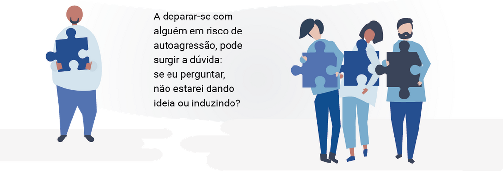
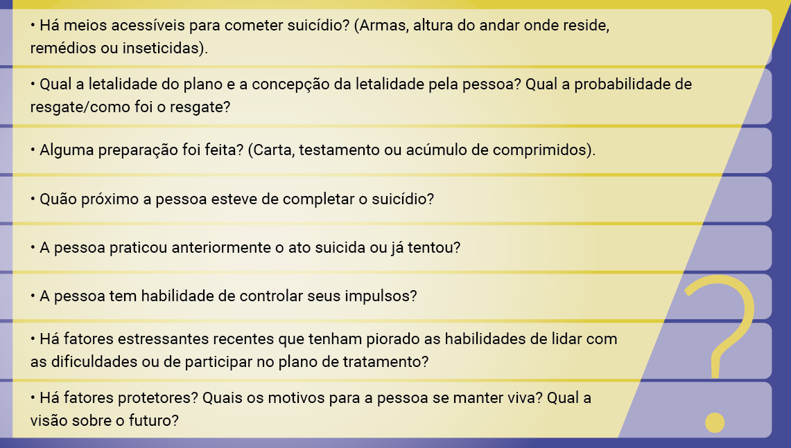
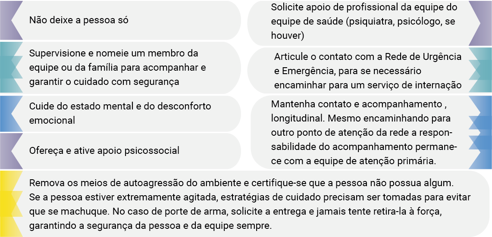

Sumário
Estratégias de manejo da pessoa em situação de risco para o suicídio
As estratégias de manejo da pessoa em situação de risco para o suicídio incluem identificação de sinais de alerta, a partir destes, intervenção para minimizar este desfecho. Traremos para você, a seguir, ações possíveis para diminuir os impactos sofridos e para evitar novas mortes ou tentativas pelas pessoas em situação de risco.
Identificando risco e sinais de alerta para o suicídio
Qualquer pessoa que esteja falando sobre suicídio, cometeu automutilação, apresente transtorno mental, dor crônica ou sofrimento emocional agudo precisa ser avaliada para risco de suicídio. Nesses casos, avalie pensamentos, planos e atos de autoagressão durante avaliação inicial e periodicamente, em seguida, conforme o caso.
Cuide do estado mental e do desconforto emocional da pessoa. Se há ideias ou planos, investigue o quanto são estruturados, se há uma data, local ou método.
A disponibilidade do método e de afastá-lo precisará ser considerada. A capacidade de controle de impulsividade e o suporte social também são importantes.
As situações de risco precisam de atenção diferenciada da equipe de saúde, dependendo de como se apresentam. Por exemplo, considere as duas situações a seguir: uma pessoa sofrendo por uma perda recente (sem planejamento e com familiares presentes) e outra com depressão recorrente (em um momento de estresse importante, com planejamento e acesso a meio letal). Ambos estão em risco e precisam atenção da equipe de saúde, mas as necessidades são diferentes. A identificação de fatores de risco e de proteção auxiliará na tomada de decisão. Como profissional da Atenção Primária à Saúde (APS), você pode não estar familiarizado com os fatores de risco e proteção, mas você saberá reconhecê-los!
Como investigar fatores de risco e proteção ao suicídio?
Qualquer pessoa que manifeste sinais de comportamento suicida deve passar por uma avaliação para identificação do risco suicida. Essa avaliação pode e deve ser realizada por qualquer profissional de nível superior da APS. Por vezes, algumas pessoas que pensam sobre suicídio podem relutar em revelar seus pensamentos suicidas; também podem ser arredios em revelar pensamentos suicidas a um profissional com o qual possua uma relação terapêutica. Assim, é preciso uma abordagem acolhedora, abrangente e clara.
A dúvida é tão comum que é citada como parte dos “mitos” relacionados ao tema. Perguntar sobre autoagressão não provoca atos de autoagressão ou suicídio. Pelo contrário, reduz a ansiedade associada aos pensamentos ou atos de autoagressão e pode ajudar a pessoa a sentir-se compreendida.
Para que seja possível conversar sobre autoagressão, é importante que haja vínculo entre profissional e usuário, com uma abordagem empática, objetiva e sem julgamentos. O atendimento contínuo, que possibilite o acompanhamento do caso, é um dos grandes potenciais da APS nesta questão.
Além de perguntar se há intenção de suicídio – e havendo –, pergunte qual o método pensado e se ele é acessível à pessoa. Quais são as razões para se autoagredir e quais a impediriam. Assim você poderá identificar: se há ou não ideação suicida; se há planejamento e acesso aos meios; quais são os fatores de risco; e quais são os fatores de proteção. A Associação Brasileira de Psiquiatria aponta que, para identificar risco de suicídio, seis perguntas são fundamentais, sendo que três delas são gerais para todas as pessoas:
Questões adicionais
O processo não termina com a confirmação das ideias suicidas. Ele continua com questões adicionais para avaliar a frequência e a severidade da ideação, bem como a possibilidade real de suicídio. É importante saber se a pessoa possui algum plano suicida e os meios para praticá-lo. Para o raciocínio clínico, a Associação Brasileira de Psiquiatria (2014) aponta que ainda é importante esclarecer alguns pontos:
Estas informações são um meio de avaliação do risco suicida. No entanto, ainda não existem classificações precisas e objetivas do risco de suicídio, pois diante da complexidade do comportamento humano, as previsões de certeza são impossíveis.
O que fazer se o risco de suicídio for identificado?
Identificando o risco, é preciso tomar alguns cuidados. Se ainda não estiver, leve a pessoa para um ambiente seguro e jamais a deixe só. Uma pessoa de confiança pode ser acionada se a pessoa estiver desacompanhada. Em geral, há aceitação por parte da pessoa de que alguém seja contatado. Caso contrário, é importante explicar a obrigação enquanto profissional de saúde de proteger e zelar pelo seu bem-estar e que precisará para isso chamar alguém que possa auxiliar nesse momento.
Uma alternativa de prevenção pode ser pelo estabelecimento de um contrato de não suicídio com a pessoa. O profissional de saúde pode formular por escrito o contrato de que segundo o qual ele não causará danos a si mesmo por um determinado período.
Por exemplo, a pessoa escreve: “Eu não causarei danos a mim mesmo entre agora e a hora do nosso atendimento”. Quando o curto período deste contrato passar, um novo contrato poderá ser realizado. Este recurso pode ajudar na prevenção do suicídio (KNOLL, 2011).
O sigilo deve ser preservado tanto quanto possível, nem sempre sendo necessário revelar diretamente fatos ou motivos relacionados à ideação suicida. No entanto, nas situações de risco para o suicídio o profissional está autorizado, por lei, a quebrar o sigilo, e deve fazê-lo, fornecendo todas as informações necessárias para o cuidado em rede nesse momento. Nas situações de risco de suicídio, tome as seguintes iniciativas:
Se há história de ideias ou planos de autoagressão no último mês, ou um ato de autoagressão no último ano, mas o risco iminente de autoagressão/suicídio não estiver presente, siga os passos a seguir:
Saiba como oferecer e ativar o apoio psicossocial, acompanhe a seguir.
- Ouça sem julgamento, proporcionando apoio à pessoa.
- Examine com ela razões e maneiras para continuar a viver.
- Focalize os pontos fortes da pessoa, levando-a a falar sobre como resolveu problemas anteriores.
- Aconselhe a pessoa e seus cuidadores a restringir o acesso aos meios de autoagressão (p. ex. pesticidas e outras substâncias tóxicas, medicamentos, armas de fogo).
- Reconheça e aceite os sentimentos da pessoa. Seja um ouvinte ativo.
- Tente oferecer esperança e lembre-a de que o que está sentindo é temporário.
- Fique com ela, não a deixe sozinha. Se necessário, procure-a.
- Demonstre amor e incentivo. Segure-a, abrace-a , toque-a. Permita que chore e que expresse sua raiva.
- Ajude a procurar ajuda.
- Mobilize familiares, amigos e outras pessoas próximas ou recursos da comunidade para garantir o monitoramento da pessoa em risco de suicídio enquanto persistir o risco.
- Informe os cuidadores que podem se sentir decepcionados com a pessoa, mas que é importante evitar demonstrar hostilidade ou criticá-la.
- Informe os cuidadores e outros familiares que perguntar sobre suicídio em geral reduz a ansiedade associada ao sentimento; a pessoa pode se sentir aliviada e mais compreendida.
- Cuidadores de pessoas com risco de autoagressão geralmente passam por um intenso estresse. Proporcione apoio emocional a esses cuidadores/familiares, caso necessitem.
Utilize ao máximo o apoio social a partir dos recursos comunitários disponíveis. Estes incluem os recursos informais, tais como familiares, amigos, conhecidos e líderes religiosos, e os recursos formais, como Equipes Multiprofissionais Especializadas em Saúde Mental e Centros de Atenção Psicossocial, se estiverem disponíveis. Grupos de apoio podem auxiliar, fornecendo suporte e apoio social necessário. Organizações que promovam atividades de grupos podem reforçar a autoestima, estimular a socialização e a recolocação profissional quando necessário. Serão importantes para manutenção da saúde mental.
Fazer e sentir-se parte de um grupo tem grande impacto na prevenção, e o profissional deve incentivar a busca pelos grupos existentes no território, além das iniciativas da própria equipe de APS. É importante que o profissional da APS conheça os recursos disponíveis e os pontos da rede de atenção que existem no seu município ou região, para, se necessário, fazer o encaminhamento. Veja no infográfico a seguir onde as pessoas podem buscar ajuda e divulgue no seu local de trabalho.

A equipe, conhecendo o território, pode discutir e articular com a rede intersetorial para ampliar as ações de prevenção e de cuidado. Podem ser grupos de apoio a mulheres vítimas de violência, coletivos LGBTQIA+, parcerias a escola, organizações que promovem cursos técnicos que ajudam pessoas a se reinserirem no mercado de trabalho, enfim, descobrir como encaminhar a pessoa para uma rede existente que atue nos determinantes relacionados à sua ideação e/ou tentativa.
Além da avaliação e do manejo das condições prioritárias, os profissionais da saúde podem desenvolver as seguintes ações para a prevenção do suicídio:
- Restrinja o acesso aos meios de autoagressão (tais como pesticidas, armas de fogo, lugares altos e abertos).
- Estabeleça uma colaboração entre o setor da saúde e outros setores relevantes.
- Envolva ativamente a comunidade para encontrar meios locais viáveis para implementar intervenções populacionais para reduzir o acesso aos meios de suicídio.
- Desenvolva políticas para reduzir o consumo nocivo de álcool como um componente da prevenção do suicídio, principalmente em populações com alta prevalência de uso de bebidas alcoólicas.
O cuidado longitudinal da pessoa em risco e após a tentativa do suicídio
A detecção e o tratamento adequado de pessoas acometidas por transtornos mentais, notadamente a depressão, a partir do atendimento em serviços gerais de saúde parece ser a forma mais efetiva de prevenir o suicídio (BERTOLOTE, 2005; BEAUTRAIS, 2004). No Brasil esta estratégia foi encampada pelo Ministério da Saúde e consta da Estratégia Nacional de Prevenção do Suicídio. O adequado manejo dos casos de , depressão, transtornos psicóticos (por exemplo, a esquizofrenia) e transtornos de personalidade (principalmente narcisista e borderline) são fundamentais no seguimento das pessoas que têm estas condições e tentaram suicídio e também para prevenção deste.
Para este adequado manejo você poderá articular o atendimento com os pontos de atenção da rede psicossocial entre eles os Centros de Atenção Psicossocial, as equipes multiprofissionais de saúde mental e os profissionais de saúde mental que compõem a equipe de saúde.
Nas primeiras semanas do tratamento com antidepressivos pode ocorrer piora da ansiedade ou ideação suicida, mas no caso de pessoas com risco de suicídio, em especial os adolescentes, essa orientação precisa ser reforçada.
A supervisão e o manejo da ansiedade costumam ser suficientes, mas no caso de agitação intensa, pessoa e familiares devem estar orientados a suspender a medicação e procurar atendimento médico imediatamente. Nos casos de diagnóstico e prescrição adequada, com cuidado nas orientações, esses riscos são superados e o benefício vem com a remissão do quadro; menores casos de recaída são superiores. O tratamento medicamentoso busca a remissão completa dos sintomas e pode requerer ajuste da dose ou troca da medicação inicial. Assim, é importante que o tratamento farmacológico seja reavaliado em cerca de quatro semanas, de acordo com o plano de seguimento devido ao risco de suicídio. A maior parte dos antidepressivos levará pelo menos esse tempo para surtir efeitos.
Como o contato deverá ser mais próximo, para acompanhamento do risco e demais intervenções psicossociais, a pessoa pode ser tranquilizada se estiver angustiada com a falta inicial de resposta ou para orientação de manejo dos efeitos colaterais. Após atingir a remissão, a manutenção do tratamento deve ser continuada por seis meses a um ano após um primeiro episódio. Deve ser estendida em casos de depressão recorrente (mais episódios).
Nos casos de risco de suicídio, impulsividade e dependência de substâncias, o tratamento deste último é necessário, e pode requerer serviços especializados em saúde mental. Sensibilizar a pessoa, encaminhá-la para serviços que realizam a desintoxicação, se estiver intoxicada e fornecer o tratamento especializado serão importantes em conjunto com as estratégias adequadas ao risco atual de suicídio.
Em casos de psicose, principalmente no início da doença, quando há crítica da gravidade ou em casos de alucinações auditivas de comando (dizendo que a pessoa deva suicidar-se, por exemplo) o risco é aumentado. Iniciar o tratamento adequado precocemente, questionar a ideação e manejar se o risco for identificado, previne o suicídio.
A inclusão social, manutenção do estudo e trabalho devem ser incentivadas. Nesse sentido, é importante que a equipe de saúde faça orientação para as escolas e os ambientes de trabalho, reduzindo o estigma e o receio de que essas pessoas não seriam confiáveis, disponibilizando a estes setores a segurança do contato com a rede de saúde se houver necessidade no seguimento da pessoa com ideação suicida.
Nos casos de tentativa de suicídio ou risco iminente com agitação, é necessário fazer o contato com a Rede de Urgência e Emergência (RUE). Em casos de autoagressão com ferimentos e intoxicação que necessitem cuidados hospitalares imediatos ou na agitação psicomotora grave, o Serviço de Atendimento Móvel de Urgência (SAMU) deve ser acionado. Assim, os princípios básicos no manejo da pessoa com comportamento suicida são a Segurança, Apoio e Intervenção direcionada.
A primeira tarefa é proteger a pessoa contra danos. Nesse primeiro momento a pessoa deve ser atendida no local adequado às suas necessidades clínicas, ainda que o serviço hospitalar não conte com atendimento psicossocial especializado. Intoxicações podem necessitar monitoramento e até atendimento em Unidade de Tratamento Intensivo (UTI) pela situação clínica.
O nível de risco de suicídio da pessoa deve ser revisado no mínimo diariamente e decisões sobre o projeto terapêutico singular do paciente devem ser tomadas com base nesta revisão do risco de suicídio. Após a estabilização, a avaliação psicossocial deve ser planejada e a pessoa não deve sair de um atendimento por tentativa de suicídio sem avaliação adequada e seguimento planejado.
A notificação de tentativa de suicídio para a vigilância epidemiológica deve ser realizada. As pessoas que necessitem ou estejam em seguimento especializado devem ser acompanhadas pela equipe de APS, seja para manutenção dos cuidados gerais de saúde ou para manutenção de tratamento psiquiátrico. Estratégias simples, como contatos telefônicos regulares após tentativa de suicídio podem reduzir as taxas de nova tentativa. Recomenda-se que se mantenha um contato regular (por telefone, visitas domiciliares), mais frequente no início (ou seja, semanalmente, nos primeiros 2 meses) e menos frequentemente à medida em que a pessoa melhorar (1 vez a cada 2 a 4 semanas).
Pode-se manter contatos mais frequentes ou prolongados, se necessário. O contato deve acompanhar a pessoa enquanto persistir o risco e avaliar os pensamentos e os planos suicidas. Em muitos casos será necessário o apoio da família ou outras pessoas importantes.
Nesses casos a segurança da pessoa com risco potencial de suicídio toma a precedência sobre a confidencialidade. Família e amigos geralmente mostram-se muito preocupados com a condição da pessoa e também desconfortáveis com o seu comportamento.
Mostram-se inseguros sobre como comportar-se, o que fazer e o que não fazer. A família e os amigos devem ser orientados para que possam ser envolvidos na terapêutica. Clique aqui e conheça o Manual de Intervenções em Transtornos Mentais para a Atenção Básica. Nas páginas 131 a 139 você encontrao tópico "Atenção ao suicídio".
No caso de a pessoa cometer o suicídio, pessoas próximas serão diretamente afetadas e podem necessitar auxílio imediato ou posterior. A equipe de saúde, familiares e amigos podem necessitar apoio.
Nestas situações as ações denominadas de posvenção tornam-se importantes, considerando o alto número de suicídios e o número de pessoas afetadas diretamente por cada óbito.
Ações de posvenção
Por vezes, mesmo com as melhores intervenções e dos melhores cuidados prestados, a pessoa cometerá o suicídio. O nosso papel como cuidadores não finaliza aí. Não podemos esquecer que o suicídio não ocorre num vácuo. Logo após a morte, existem outros – família, amigos e a própria comunidade – que precisam de apoio. Assim, além das estratégias envolvendo a prevenção do suicídio, é preciso atentar à posvenção.
O termo postvention foi criado pelo psicólogo americano Edwin Shneidman e define as atividades que ocorrem após decorrido o suicídio ou que têm como objetivo diminuir os impactos sofridos pelos enlutados e evitar novas mortes ou tentativas (MULLER, 2017). O luto do suicídio é um processo de adaptação pelo qual a família, amigos e outras pessoas próximas passam após a morte do sujeito que se suicidou.
As pessoas que passam por este processo são descritos como “sobreviventes do suicídio”: quando ocorre uma morte por suicídio, muitas pessoas sofrem seus efeitos. Estudos mostram que a cada morte por suicídio cerca de 60 pessoas são intimamente afetadas; nesse sentido, é muito importante identificar quem são estas pessoas e realizar o acompanhamento e auxílio a estas.
Antes de se suicidar a pessoa passa por um processo de ambivalência que gera sofrimento psíquico. Após o ocorrido, aqueles que ficam passam a sentir, assim como aqueles que se mataram, ambivalência naquilo que sentem e pensam. Isso significa que, além de lidar com os próprios sentimentos (culpa, pena, julgamento), com o estigma, os familiares e amigos próximos acabam tendo de lidar também com os sentimentos da pessoa que se matou (FUKUMITSU et al., 2015).

A perda de um ente querido pelo suicídio é muitas vezes chocante, dolorosa e inesperada. A tristeza que se segue após o falecimento pode ser intensa e, como o luto é um processo individual e único, não há prazo determinado para sua finalização. Nesse sentido, é importante compreender que os familiares necessitam ser auxiliados na sua tentativa de se adaptarem à vida sem o seu ente querido e, para tanto, é indicado que sejam escutados atentamente sem julgamento, críticas ou preconceitos.
Por conta do estigma, é comum que essas pessoas não compartilhem sua história, e tenham sentimentos que vão desde raiva, vergonha, descrença, desespero até estresse, depressão, culpa, solidão e medo (AAS, 2004). As pessoas ainda precisam lidar com a sensação de que algo poderia ter sido feito para evitar a morte por suicídio, o que ilustra a peculiaridade dessa situação (OPAS, 2011).
É comum que pessoas apresentem atitudes negativas sobre a morte por suicídio, baseadas em crenças culturais, religiosas e sociais. Veem como uma questão moral e não como um problema de saúde. Esse preconceito, além de reprimir o compartilhamento da história por quem está sofrendo por medo do julgamento, ainda faz com que muitas vezes a família esconda a real causa da morte (OPAS, 2011).
Por isso, é necessário compreender que a família não deve ser vista somente como rede de vigilância e suporte, mas também como um grupo que necessita de atenção e que é profundamente impactado com a carga de violência e desgaste emocional que o suicídio representa (MULLER, 2017). Algumas ações importantes podem auxiliar os chamados “sobreviventes do suicídio”, e são bastante úteis para os profissionais de saúde.
- Oferecer um espaço de escuta, que algumas vezes precisa ser particular, e questioná-los a respeito do que precisam. Deixar a pessoa que está sofrendo falar no seu próprio ritmo é extremamente importante.
- Falar mais de uma vez sobre o que aconteceu é importante parte da diminuição do sofrimento. Saber disso pode ajudar o profissional a compreender que, muitas vezes, é necessário ouvir mais de uma vez a mesma história (AAS, 2004).
- Outro ponto relevante é utilizar o nome da pessoa que faleceu em vez de “ele” ou “ela”. Isso a humaniza e dá conforto para quem está sofrendo sua perda. Da mesma forma, é importante lembrar que a empatia do ouvinte se diferencia de querer tirar a dor de quem está em sofrimento; ou seja, não se deve dizer como a pessoa deve agir ou que ela deve se sentir melhor agora (AAS, 2004).
Os quatro princípios de intervenção pós-suicídio são: Apoio, Aprendizado, Aconselhamento e Educação. A seguir, essas intervenções são descritas de forma articulada. Uma das principais estratégias para a posvenção são os grupos de apoio à família, também chamados de Grupos de Suporte Mútuo para enlutados. Esses espaços ofertam escuta, acolhimento e informação aos familiares que são diretamente afetados na morte por suicídio (MULLER, 2017). Os grupos de apoio são úteis para os participantes expressarem seus sentimentos, contar sua história e compartilhar com outros que tiveram um evento similar. Podem auxiliar no processo de cura.
Há muito poder de cura no compartilhamento do sofrimento e de experiências comuns, pois isso ajuda a quebrar o sentimento de estar isolado ao oferecer um espaço que mostra que as pessoas não estão sozinhas em suas jornadas (OPAS, 2011). As redes de apoio encontradas na comunidade também se configuram como importantes no compartilhamento de experiências e podem ser de amizade, familiares, grupos religiosos ou espirituais e não necessariamente precisam ser grupos específicos sobre suicídio. Estas redes podem dar suporte tanto no momento logo após o suicídio com as questões práticas relacionadas ao funeral, depoimentos à polícia, se necessário, bem como outras decisões e oferecer apoio no momento de contar para pessoas próximas sobre a morte (OPAS, 2011).

Assim como na prevenção, na posvenção o trabalho em equipe e a atuação multidisciplinar são bases para manejar de maneira adequada as questões relacionadas ao suicídio nos dispositivos de saúde, tendo em vista a complexidade desse fenômeno. Os profissionais devem se comunicar e articular suas ações de forma integrada, aproveitando a diversidade de saberes e práticas em saúde mental que cada área tem como contribuição (MULLER, 2017).
É importante compartilhar os casos atendidos para ampliar as possibilidades de intervenção, ou seja, priorizar o trabalho em rede com atenção para o diagnóstico, para humanização no atendimento, atenção às peculiaridades de cada pessoa atendida, estimular o envolvimento da família no tratamento e também apoiá-la nas suas necessidades. Outro fator relevante é aprender com a morte de qualquer pessoa, qualquer que seja a causa; muitas instituições hospitalares desenvolvem as “sessões de mortalidade”: oportunizam revisar de modo objetivo os casos fatais, e são realizadas como um exercício de aprendizado, sendo conduzidas de uma forma não julgadora e sim de apoio.
O desenvolvimento deste grupo deve ser realizado por um profissional experiente em grupo e em suicídio (KUTCHER; CHEHIL, 2007). Procure também conhecer se na sua área de abrangência existe algum grupo que possa dar suporte às pessoas que tiveram um amigo ou familiar que suicidou-se.
Este pode ser um importante ponto de apoio incorporado à rede de atenção. Clique aqui para saber um pouco mais sobre posvenção, leia este artigo de Karina Okajima Fukumitsu, que é estudiosa no assunto.
Nos casos de óbito por suicídio, as famílias ou a própria equipe de saúde podem ter dificuldades em reconhecer esta situação. A busca da adequada identificação, com investigação pelos órgãos responsáveis e com o registro do suicídio na declaração de óbito é importante para dar visibilidade a esta situação no país. No entanto, lembrando que assim como no caso da notificação, para além das questões epidemiológicas e legais estão os cuidados necessários com as pessoas envolvidas na situação.